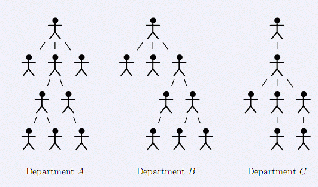

在很久很久以前，某国政府成立了一个精简机构部，你可以认为它是个最大的部，公务员的数量的确很多，然后，他们的结构却相当简单，部长最多有3个下属，这些下属也最多只能有3个下属，等等。最近，心选了一个部长，他年轻、英俊兵充满了才华，他决定从他的部门开始实行机构精简，他发现部门分级结构的许多部分是一样，因此，他们肯定是在做相同的工作，无论什么时候，两个相同的部分作同一项工作，必然有一个部门没事干。因此，该部门所有的这些都是多余的。你的任务就是找出多少个完全不相同的部门实现该次精简任务。 任务 给你一个部的组织结构图，每个公务员只有一个上级，最多有3个下级（包括0个），注意部长没有上限，但也最多只有3个下级，下级之间都是平等的，没有级别大小之分。一个部门包含一个官员和他的下级，他下级的下级等等，有两种特殊情况：由部长开始的所有人构成的部门和只有1个人没有任何下属的部门。部门的深度是由部门官员连接起来的一个链X1,……,Xd,其中，对每个1≤i≤d，Xi是Xi+1的上级，只有一个人的部深度为1。两个部门A和B的结构完全相同是指对于部门A的每个官员X有部门B的官员X’与之对应，反之，对于部门B的每个官员X’有部门A的官员X与之对应。特别地，对于所有的官员X和Y：X是Y的上级当且仅当X’（相对于官员X）是Y’（相对于官员Y）的上级。如果部门A和部门B结构相同，那么两部门的领导相对应，深度相同，人数相等。在下面的图中，部门A和部门B结构相同，而部门C的结构与A、B不同。你的任务是决定对于所有的深度不同结构部门的数目，换句话说，你必须提供这样一个序列，n1,……,nd,d是部的深度，对每个i，包含深度位i的完全不同结构部门的数目。 
(((())())((()())(()()()))(()(())))
1
3
2
1